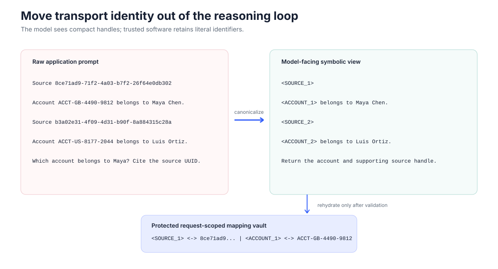

Hypothesis
High-entropy UUIDs increase transport and literal-copy cost and may reduce correct source binding under load.
Stage 01 · controlled baseline
Synthetic single-hop retrieval holds facts, questions, distractors, source order, and decoding fixed while rendering the same examples with structured, numeric, compact-random, hexadecimal, or UUID labels.
Result in one line. Compact labels were universally cheaper in the pilot; binding effects were model-dependent, and parser-aware rescoring removed an apparent Gemma E2B UUID advantage.
Strict citation match can confuse wrapper compliance with correct evidence selection. This experiment reports answer content, strict formatting, relaxed binding, tokens, and latency separately.
High-entropy UUIDs increase transport and literal-copy cost and may reduce correct source binding under load.
Token-matched controls or scaled model cells should show parity or stable UUID advantages once parsing errors are corrected.
One canonical object supplies the question, answer, passages, and gold source key to every render.
Numeric [1], structured [S1], random compact, long hex, and UUID families.
Answer correctness, strict citation, relaxed binding, malformed/invalid IDs, input/output tokens, and latency.
Numeric-vs-structured syntax/length checks, no-reproduction arms, and a 1,600-generation decoding factorial.

UUID input overhead across pilot tokenizers
sequential local CPU overhead
structured to UUID at 20 sources
| Model | 5 src structured | 5 src UUID | 20 src structured | 20 src UUID |
|---|---|---|---|---|
| Qwen 1.5B | 96% | 63% | 66% | 37% |
| LFM 1.2B (excluded) | 43% | 8% | 10% | 0% |
| Gemma E2B | 22% | 59% | 48% | 73% |
| Gemma E4B | 100% | 100% | 100% | 100% |
12,000 generations
The frozen cohort excludes both LFM checkpoints, preserves transport comparisons, and reveals model-specific ceiling behavior. Offline parser repair rescored Gemma E2B near ceiling in both formats: −0.2 points at five sources and +0.6 at twenty, with both intervals crossing zero.
1,600 diagnostic generations
The factorial separates prompt-prefill handling from generation budget. Prefill arms had zero truncation; the default 80-token arm truncated every output.
Qwen’s 20-source strict score was 7% with structured labels versus 34% with UUIDs, while relaxed binding was 66% versus 37%. Missing brackets made the easier representation look worse under exact string match.
Compact aliases reduce transport cost across tested tokenizers. Binding benefit depends on model and capacity. Strict formatting is a separate output-interface behavior, and answer correctness can remain high while provenance binding degrades.
Model interfaces should be evaluated on semantic binding and transport cost, not exact wrapper match alone.
Gemma E2B originally showed UUID advantages of 37 points at five sources and 25 points at twenty. Inspection found a same-line citation parser failure; rescoring changed the conclusion. Stage 01 does not establish a universal accuracy advantage, multi-hop behavior, or unquantized deployment performance.
Deterministic, quantized local models and a fictional single-hop corpus isolate variables but do not represent every production stack.
FINDINGS_CROSS_MODEL.mdFINDINGS_STAGE1_500_*.mdFINDINGS_STAGE1_FACTORIAL.mdresults/processed/cross_model.jsonblog/evidence_manifest.csv · stage1 · stage1_500 · stage1_factorial